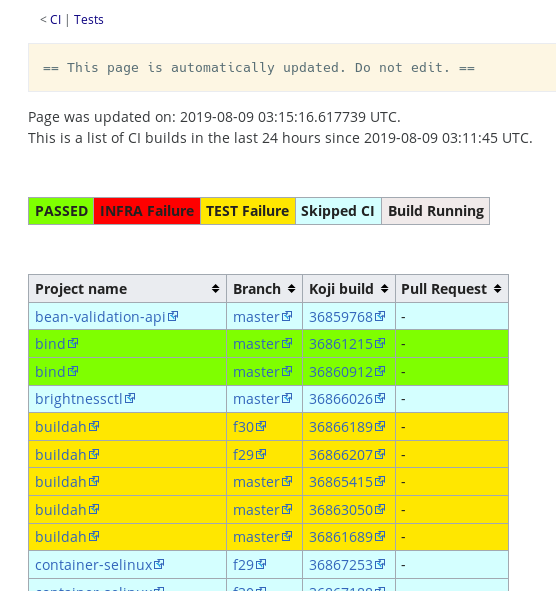
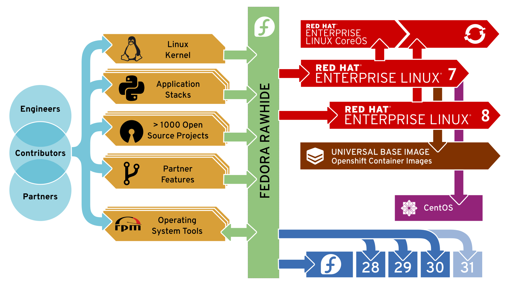

Fedora CI Objective:
present and future
Dominik Perpeet
Aleksandra Fedorova (bookwar)
Topics
Fedora CI Objective 2017
What is CI?
Fedora CI Objective 2019
Fedora CI Objective 2017
- We aim to deliver Atomic Host in Fedora via Continuous Integration and Continuous Delivery
- A framework for automating tests and providing results
- Primary goal is to know that component builds are tested, working, and ready for a compose
- https://docs.fedoraproject.org/en-US/ci/
Standard Test Interface
- Standard Discovery, Staging and Invocation of Integration Tests
- Pipeline to run the tests
- Provide feedback to users
Tests in dist-git
Testing is a thing
Tests run on rawhide and branched releases

CI Objective 1.0
Retro: CI Objective 1.0
- Mindset change bootstrapped
- Standards established
- Some workflows hurt...
- More design needed!
“Continuous Integration”
- Assemble it together like in production, then test drive it like a user. This is Integration.
- Do those integration tests for every single "change". This is Continuous.
Self-sustaining Continuous Integration
- Tests must be changeable by people making the software change
- Rapid feedback to the person who makes a change
Why an Objective?
Larger than one problem
Synchronize multiple goals
Keep in mind overall rate of change, impact
Fedora CI Objective 2019
Continuous Integration for Rawhide
Changes shouldn't break other contributions
Key areas
- Rawhide gating (pingou)
- Distribution-wide tests for packages (dcantrell, tflink)
- Documentation for the packager experience (bookwar)
- Tie in upstream project via Packit (ttomecek)
Rawhide gating
- Works: Single-package updates
- Next: Multi-package updates
Distribution-wide tests
- Almost done: rpminspect
- Next: Establish rpminspect as a reliable test
- Next: Policy - how to gate distro-wide?
- Later: installability, reverse dependency testing, rebuild testing
Packit
Connect the upstream to Fedora

Packit
- Now: packit can propose updates to Fedora from upstream
- Next: packit can do builds